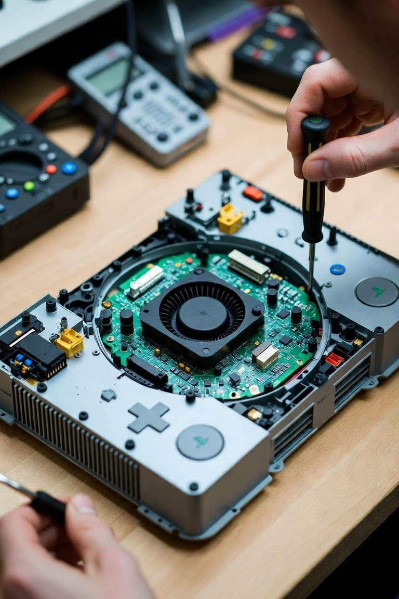
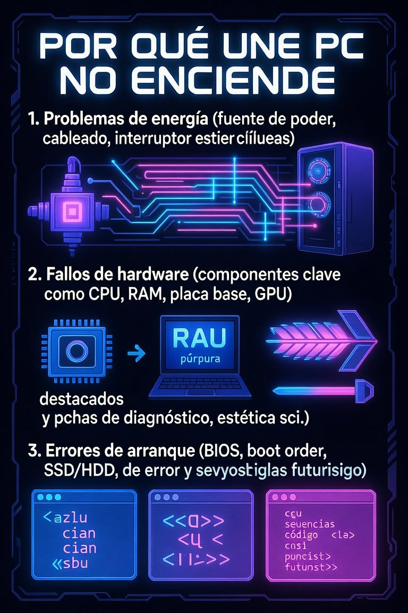

Redes
¿Cuándo necesitas reiniciar tu router con un toque de fuerza?
Aprende a distinguir un reinicio normal de un restablecimiento de fábrica y a diagnosticar una caÃda de conexión sin borrar tu configuración.
GUÃA DESTACADA
Procedimiento seguro para limpiar ventiladores, filtros y disipadores, comprobar el resultado y saber cuándo no conviene seguir por cuenta propia.
Leer la guÃa
Redes
Aprende a distinguir un reinicio normal de un restablecimiento de fábrica y a diagnosticar una caÃda de conexión sin borrar tu configuración.

Laptops
Un método práctico para diagnosticar el problema, calcular el costo total y decidir si reparar o reemplazar una laptop.

MikroTik
GuÃa práctica para localizar una falla de conectividad mediante pruebas ordenadas antes de modificar la configuración.

Consolas
Qué comprobar cuando una PS4 no enciende y cómo separar una falla de alimentación de un problema interno.

Diagnóstico
Una ruta de diagnóstico para determinar si el problema está en la alimentación, los componentes o el proceso de arranque.